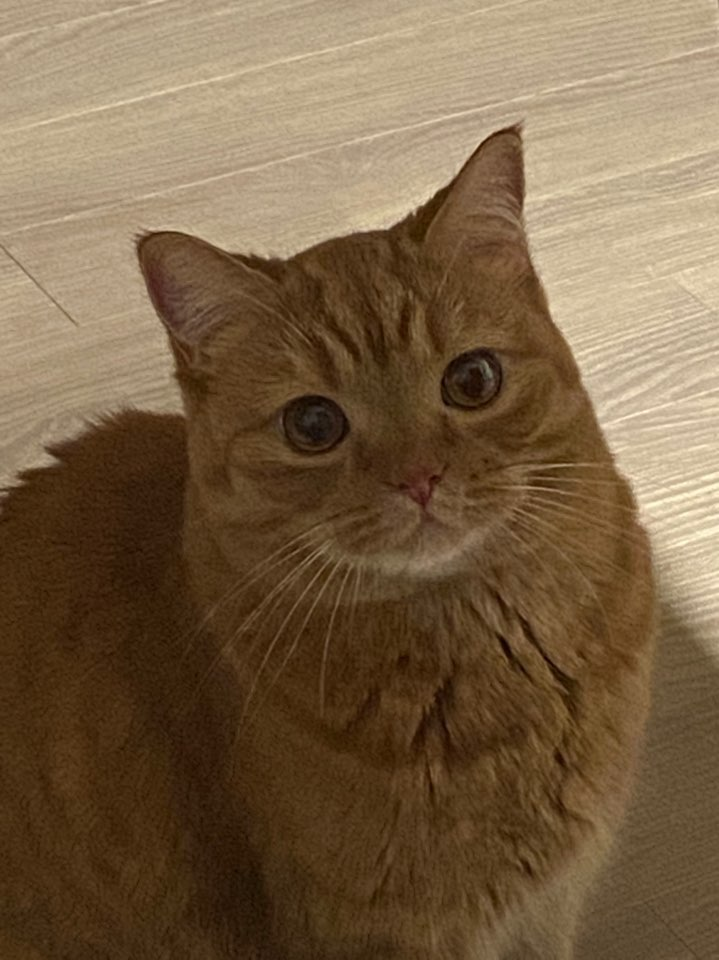

2018년 3월 12일 서울시 강동구 천호동태생의 브리티쉬 숏헤어. 브리티쉬 숏헤어지만 , 천호동에서 태어났다. 노란색 바탕털에 진갈색 태비 줄무늬를가진 전형적인 치즈냥이. 하지만 턱은 흰둥이다 .

분명히 처음 만났을때는 초록색 눈동자였지만 5-6개월령쯤 호박색으로 바뀜. 사나웠지만 지금은 순함 그래도 귀찮게하면 사납다.현재 가장 싫어하는건 발톱깎기 + 아직 한 번도 목욕을 하지않았다..200g에서 지금 현재는 6kg예상.하루에도 몇 번씩 간식을 달라고하며 하루가 다르게 점점 커져가고 있음. 다이어트를 당하고 있지만 본인이 그것을 인지하고 있는지는 잘 모르겠음.